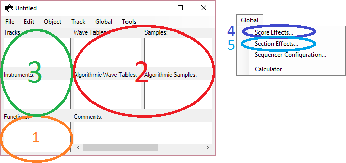

A User Interface Road Map
The key objects that comprise a document are accessible in various places in the user interface. The following map and discussion shows how they tie together.

Figure 1: User Interface Road Map
Descriptions of the primary objects in the user interface:
1. Functions
The functions are pieces of code that implement algorithms which are used in three scenarios:
A. As audio data preprocessing functions for samples and wave tables (#2 in Figure 1)
B. As implementations of extensible user effects in instruments or score/section effects (#3, #4, #5 in Figure 1)
C. As functions that can be called from parameter formulas specified in instruments or score/section effects (#3, #4, #5 in Figure 1)
Functions are invoked by name in snippets of code (expressions) embedded in other objects.
2. Wave Resources
Sampled and wave table data objects are stored in this section. "Wave Tables" and "Samples" are actual recorded audio data. "Algorithmic Wave Tables" and "Algorithmic Samples" represent audio data that is created through evaluation of code, possibly applied as a transformation to data from "Wave Tables" and "Samples".
The wave resources are usually referenced by name from instruments and sometimes score or section effects.
3. Tracks/Instruments
Tracks and Instrumens are closely related. The Instrument defines the synthesis component chain for creating a particular as well as how that chain is parameterized. The Track provides the series of events that are fed to the instrument by the sequencer.
There is a natural one-to-one correspondence between tracks and instruments. In the simplest usage, each track has an instrument it is associated with. This is not a strict rule. Multiple tracks may use the same instrument. Since the instrument is a definition, a separate instance of the instrument is created for each track. Also, a track may reference multiple instruments via a pitch-split mechanism, where note events are assigned to the instruments based on nominal pitch. Finally, sometimes a track is used for parameter control and has no instrument associated with it.
Instruments are associated with tracks by name in the Instrument field of the Track Properties dialog.
An architectural overview of how instruments and tracks work together can be found here.
4. Score Effects
The score effects is a special type of instrument that describes the processing chain for the entire score, after all tracks and sections have been mixed. Look for the "Score Effects" box in the flow diagram described here.
5. Sections Effects
Each track can be assigned to a section. The effects processing for a section is applied to the result of mixing the member tracks. Look for the "Section Effects" boxes in the flow diagram described here.